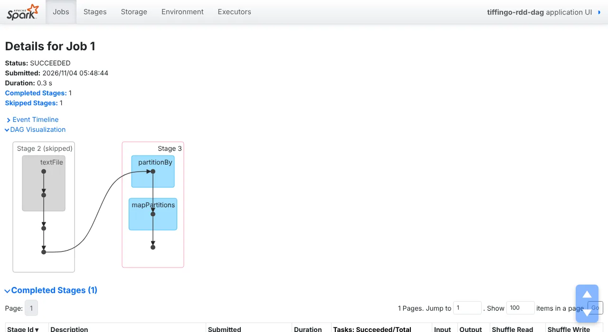

Lazy evaluation is the idea that explains most surprises in Spark: errors that appear in the wrong place, work that runs twice, and work that mysteriously does not run at all. This lesson measures each one on TiffinGo’s reviews and reads the lineage DAG as text and in the Spark UI. All outputs and screenshots are real (PySpark 4.3.0).
Module 2 · RDDs: Spark’s foundation⏱ 32 minIntermediatePySpark 4.3.0toDebugString() explainedSkipped stages, explainedRuns in your browser (Python)8 practice problems
1 The story
“The bug was in line 4, but Spark complained in line 20”
Before you start: Lessons 2.2 (operations) and 1.4 (jobs, stages, tasks).
Riya wrote a word count over three months of TiffinGo reviews. Line 4 had a bug in a map, but the error only appeared at line 20, the count(). Then she added a second report on the same words and the job took twice as long. Kabir says Spark is “lazy”, which sounds like an insult.
Riya
Sir, why did Spark not stop at the line with the bug?
Arjun Sir
Because nothing on that line ran. A transformation only adds a node to the lineage graph, a DAG. When an action needs a result, Spark walks the graph, cuts it into stages at shuffles and runs it. Errors inside your functions appear only then.
Kabir
And the second report took as long as the first?
Arjun Sir
Every action walks the lineage again from the start, unless something is kept along the way: a cache, or shuffle files that Spark reuses on its own. Today we look at the DAG as text and in the UI, count how often our functions really run, and find out what Spark reuses. All outputs are real (PySpark 4.3.0).
2 Definition
Lazy evaluation and the lineage DAG
Formal definition (write this in exams)
Lazy evaluation means that RDD transformations are not executed when they are called; Spark records each new RDD with its dependencies on parent RDDs, forming a lineage graph (a directed acyclic graph, DAG). When an action is invoked, the DAGScheduler builds stages from the graph, splitting at shuffle (wide) dependencies and pipelining narrow transformations within each stage, and submits tasks. Each action re-evaluates the lineage from its sources, except where results are already available: RDDs persisted with cache()/persist(), and shuffle outputs from earlier stages, which allow those stages to be skipped. Errors in user functions surface only when the action runs the corresponding tasks. The lineage also provides fault tolerance by allowing lost partitions to be recomputed.
In simple words
Spark writes down your steps instead of doing them. When you ask for a result, it plans and runs everything needed. Each new request runs the steps again, unless results were kept in memory (cache) or Spark can reuse earlier shuffle data.
Words you’ll meet in this lesson
Lazy evaluationTransformations are recorded, not run, until an action.
LineageThe chain of parent RDDs; toDebugString() shows it.
DAGDirected acyclic graph: steps with arrows, no cycles.
DAGSchedulerThe driver part that cuts the DAG into stages.
PipeliningRunning several narrow steps in one pass over a partition.
cache()Keep an RDD’s partitions in memory after first use.
Storage levelWhere and how cached data is kept (memory, disk, serialised).
Laziness in RDDs and DataFrames
RDD
DataFrame
Transformations run
At the action
At the action
Errors in your code appear
At the action (Python worker error)
Column/type errors at once (analysis); data errors at the action
Optimisation before running
None: steps run as written
Catalyst rewrites the whole plan
See the plan
rdd.toDebugString()
df.explain()
Reuse between actions
cache, shuffle files
cache, shuffle files, AQE reuse
Laziness and the DAG at three levels
Pick your level. New to this? Start at Beginner and climb.
Beginner A to-do list, not a done list
Transformations write steps on a to-do list. An action says “do the list now”.
If a step is wrong, you find out only when someone tries to do it.
Doing the list twice means doing the work twice, unless you keep the results.
Intermediate How Spark uses the DAG
Each RDD points to its parents; together they form a directed acyclic graph (DAG) of the computation.
At an action, the DAGScheduler cuts the graph into stages at shuffle dependencies; narrow steps inside a stage are pipelined (one pass per partition).
Laziness lets Spark combine steps, skip work that is not needed (take reads only some partitions) and recompute lost partitions.
Advanced What the lab showed
A map(lambda l: len(l) / 0) was accepted; count() raised ZeroDivisionError from a Python worker.
Without cache, two actions ran the tokenizer 48,000 times on 24,000 lines; with cache(), 24,000.
On the cluster, a second action on the same reduced RDD skipped the map stage: Spark reused the shuffle files (14.0 s → 0.2 s of task time).
Exam tip: “What is lazy evaluation and why does Spark use it?” Transformations only build a lineage DAG; actions trigger execution. Spark can then pipeline narrow operations into stages, avoid unnecessary work, optimise (for DataFrames), and recover lost partitions from lineage. The cost: each action recomputes the lineage unless data is cached or shuffle output is reused.
3 Types and ways to use it
What Spark reuses, and what it recomputes
Situation
Recomputed on the next action?
Seen in the lab
Plain RDD, narrow steps only
Yes, from the source
tokenize ran 48,000 times for 2 actions
After cache() (once filled)
No, read from executor memory
24,000 calls; job D 0.3 s
Before a shuffle that already ran
No, shuffle files reused (stage skipped)
Job B: stage 2 skipped
Cached partition lost (executor died)
Only that partition, from lineage
Lesson 1.3
After checkpoint()
No; lineage is cut and saved to storage
Lesson 3.3
Reused shuffle files are a bonus, not a plan: they disappear when executors are lost or the shuffle data is cleaned up, and they only cover work before the shuffle. If you will use an RDD several times, cache() it deliberately and unpersist() it afterwards.
4 Step by step
Watching laziness happen
All outputs are real: PySpark 4.3.0 in local mode (Steps 1–4) and on the standalone cluster (Steps 5–6). Data: three months of TiffinGo reviews, 24,000 lines in 3 files.
Step 1 · A bug that waits for an action
lines = sc.textFile("reviews")
bad = lines.map(lambda l: len(l) / 0)
print("defined bad RDD, no error yet:", bad)
bad.count()
defined bad RDD, no error yet: PythonRDD[2] at RDD at PythonRDD.scala:59
ERROR Executor: Exception in task 1.0 in stage 0.0 (TID 1)
org.apache.spark.api.python.PythonException: [PYTHON_EXCEPTION] An exception was thrown from the Python worker: …
File "lazy.py", line 8, in <lambda>
bad = lines.map(lambda l: len(l) / 0)
ZeroDivisionError: division by zero
at count(): ZeroDivisionError: division by zero
Defining bad was accepted: Spark cannot check what a Python lambda will do. The error appeared at count(), raised inside a Python worker on an executor and reported with the original line. In long pipelines, the line where the error is reported is the action, not the bug. Test functions on a small sample with take() while developing.
Step 2 · Read the lineage
counts = (lines.flatMap(lambda l: l.split())
.map(lambda w: (w, 1))
.reduceByKey(lambda a, b: a + b)
.filter(lambda kv: kv[1] > 5000))
print(counts.toDebugString().decode())
Read bottom-up. HadoopRDD and MapPartitionsRDD come from textFile. PySpark fusedflatMap and map into one PythonRDD[4]: pipelining in action. +-(3) marks a shuffle boundary: everything indented below it is one stage (3 tasks), everything above is the next stage, starting with ShuffledRDD. The filter after reduceByKey was fused into the final PythonRDD[8].
tokenize() calls for 2 actions, no cache: 48000 (24,000 lines x 2)
tokenize() calls for 2 actions, cached : 24000
storage level: Memory Serialized 1x Replicated
Two actions on an uncached RDD ran tokenize48,000 times for 24,000 lines: the whole lineage was executed twice, file reading included. After cache(), the first action filled the cache and the second read from memory: 24,000 calls. RDD cache() in PySpark stores serialised data in memory (“Memory Serialized 1x Replicated”).
Step 4 · Laziness lets Spark do less
lines.map(lambda l: l.upper()).take(5) # only as many partitions as needed
lines.map(lambda l: l.upper()).count() # every partition
# jobs and tasks read from the UI's REST API (port 4040)
Because nothing runs early, Spark knows what the action actually needs. take(5) ran only on the first partition; count() on all three. The same idea lets DataFrames push filters into file scans (Lesson 7.3). With RDDs, Spark cannot reorder your lambdas, but it still avoids running what no action asked for.
Step 5 · The DAG on the cluster: stages and skipping
counts = lines.flatMap(lambda l: l.split()).map(lambda w: (w, 1)).reduceByKey(add)
sc.setJobDescription("A: top words (no cache)"); counts.takeOrdered(3, key=lambda kv: -kv[1])
sc.setJobDescription("B: count() again, no cache"); counts.count()
counts.cache()
sc.setJobDescription("C: count after cache() - fills the cache"); counts.count()
sc.setJobDescription("D: filter on the cached RDD"); counts.filter(lambda kv: kv[1] > 5000).count()
[('and', 24000), ('was', 24000), ('masala', 4924)]
40
40
2
job 0: stage 0 complete + stage 1 complete task time 14.0 s | A: top words (no cache)
job 1: stage 2 skipped + stage 3 complete task time 0.2 s | B: count() again, no cache
job 2: stage 4 skipped + stage 5 complete task time 0.7 s | C: count after cache() - fills the cache
job 3: stage 6 skipped + stage 7 complete task time 0.3 s | D: filter on the cached RDD

Real screenshot: job B, the second count() without cache. Stage 2 (textFile, flatMap, map) is grey and skipped: Spark reused the shuffle files written by job A.Job A ran both stages: 14.0 s of task time, mostly reading and tokenising. Job B, without any cache, skipped the map stage and took 0.2 s: the shuffle files from job A were still on the executors, so Spark started from them. Only the work after the shuffle reran. “and” and “was” top the list because every review contains them; Lesson 2.5 filters such words out.
Real screenshot: job D after cache(). The green dot in stage 7 marks the cached RDD; the filter ran on it directly.After cache(), job C computed the reduced RDD once more and stored it; job D found it in memory (the green dot) and only ran the filter. The Storage tab would list the RDD with its size and fraction cached. Lesson 3.1 compares storage levels and their costs.
5 See it happen
A plan that runs on demand
Left: real outputs. Right: the DAG underneath.
A plan that runs on demand 5 steps
What you see
A broken map was accepted; count() failed.
The lineage shows one shuffle boundary.
Without cache, the tokenizer ran twice per line.
The second action skipped the map stage.
The cached RDD served the last action.
Behind the screen
Transformations only add nodes to the DAG.
flatMap and map were pipelined into one PythonRDD.
Lineage is evaluated from the source per action.
Shuffle files from job A were still there.
Only the filter ran on cached data.
Three live scenarios follow: an error far from its cause, reports that repeat work, and a lineage that grows too long.
Real-time scenario 1
An error reported far from its cause
What laziness means for debugging. (Typical; behaviour from our lab.)
Lazy errors 5 steps
Animated example
Fails at the end.
Traceback points back.
Sample it.
Handle bad records.
Unit-test functions.
Real-time scenario 2
Three reports that each parse everything
The cost of forgetting laziness. (Typical; counts from our lab.)
Reuse with cache 5 steps
Animated example
Three actions.
Parsing three times.
Cache once.
Verify.
Release.
Real-time scenario 3 · advanced
When the lineage gets too long
Why iterative jobs need checkpoints. (Typical.)
Long lineage 5 steps
Animated example
Lineage grows.
Scheduler struggles.
Recovery is slow.
Checkpoint.
Short graph.
6 Real-world use
Laziness at work
1. Developing on samples
Engineers test each step with take() on a few rows before running the full action on terabytes.
Code→take(10)→Full run
2. Shared intermediate data
One parsed dataset feeds several reports; it is cached once and released after the last report.
Parse→cache→Reports
3. Reading DAGs in reviews
toDebugString and the DAG view show unintended shuffles and repeated stages before a job ships.
Job→DAG→Fix
4. Iterative algorithms
Graph and ML algorithms cache their working set and checkpoint periodically to keep lineage short.
Loop→cache + checkpoint→Converge
5. Debugging Python workers
PythonException tracebacks in executor logs point to the line in your function that failed.
Action fails→traceback→Fix line
Examples are simplified.
7 Run the code
Run the code: count what laziness costs
A Python generator behaves like an uncached RDD: defining it runs nothing, and every consumer runs it again. Press Run, then try the challenges.
# A lazy pipeline with a call counter: what runs, and how often?
calls = {"tokenize": 0}
def tokenize(line):
calls["tokenize"] += 1
return line.split()
lines = ["poha was tasty and hot", "idli was cold and late", "dosa was fresh and hot"]
plan = lambda: (w for l in lines for w in tokenize(l)) # a recipe, nothing runs yet
print("after defining:", calls)
print("count:", sum(1 for _ in plan())) # action 1
print("distinct:", len(set(plan()))) # action 2
print("after 2 actions, no cache:", calls)
calls["tokenize"] = 0
cached = list(plan()) # cache = keep the result
print("count:", len(cached), "distinct:", len(set(cached)))
print("after 2 actions, cached:", calls)
after defining: {'tokenize': 0}
count: 15
distinct: 10
after 2 actions, no cache: {'tokenize': 6}
count: 15 distinct: 10
after 2 actions, cached: {'tokenize': 3}
plan = lambda: (w for l in lines for w in tokenize(l)) # a recipe, nothing runs yetLike rdd.flatMap(tokenize): a description, not a result.
cached = list(plan()) # cache = keep the resultLike rdd.cache() followed by the first action.
Run on your PC: look at lineage and reuse
In the pyspark shell with the reviews folder. Outputs are real (PySpark 4.3.0).
1 · Lineage of a word count
counts = sc.textFile("reviews").flatMap(lambda l: l.split()).map(lambda w: (w, 1)).reduceByKey(lambda a, b: a + b)
print(counts.toDebugString().decode())
(3) PythonRDD[8] at RDD at PythonRDD.scala:59 []
| MapPartitionsRDD[7] at mapPartitions at PythonRDD.scala:197 []
| ShuffledRDD[6] at partitionBy at DirectMethodHandleAccessor.java:103 []
+-(3) PairwiseRDD[5] at reduceByKey at /root/lab/spark/jobs/m2/l23_lazy.py:19 []
| PythonRDD[4] at reduceByKey at /root/lab/spark/jobs/m2/l23_lazy.py:19 []
| /root/lab/spark/data/tiffingo/reviews MapPartitionsRDD[1] at textFile at DirectMethodHandleAccessor.java:103 []
| /root/lab/spark/data/tiffingo/reviews HadoopRDD[0] at textFile at DirectMethodHandleAccessor.java:103 []
This output also includes a final filter (PythonRDD[8]). +-(3) is the shuffle boundary.
2 · Cache and its storage level
words = sc.textFile("reviews").flatMap(lambda l: l.split()).cache()
words.count()
repr(words.getStorageLevel()); print(words.getStorageLevel())
Recorded from a real Python run: press Next to execute one line at a time. Watch variables change in each frame, and lists and dictionaries (numbered #1, #2 …) fill up as objects.
Example 2IntermediatePerformance · reuse
Should I cache?
Problem statement
Decide whether to cache an RDD used by several actions.
Input
cost per pass and number of actions
Expected output
no cache: 42.0 s | cache: 14.6 s (approx.)
Approach
Count actions using it.
Compare recompute cost with memory.
Cache only if reused.
Solution: run it live
What happens in memory, step by step
Recorded from a real Python run: press Next to execute one line at a time. Watch variables change in each frame, and lists and dictionaries (numbered #1, #2 …) fill up as objects.
Example 3AdvancedInternals · stages
Predict skipped stages
Problem statement
Which stages run for a second action on a reduced RDD?
Input
counts = ...reduceByKey(add)
Expected output
map stage: skipped | reduce stage: run
Approach
Map stage wrote shuffle files.
They still exist.
Only the reduce stage runs.
Solution: run it live
What happens in memory, step by step
Recorded from a real Python run: press Next to execute one line at a time. Watch variables change in each frame, and lists and dictionaries (numbered #1, #2 …) fill up as objects.
9 Quiz and revision
Check yourself
Quick revision
Lesson 2.3 in one screen
Transformations build a lineage DAG; actions run it. RDD lambda errors appear at the action.
toDebugString(): read bottom-up; +-(n) = shuffle boundary; narrow Python steps fused into one PythonRDD.
Each action re-evaluates the lineage: 48,000 tokenizer calls for 2 actions vs 24,000 with cache().
Shuffle files are reused across actions: map stage skipped (14.0 s → 0.2 s).
Cache deliberately, unpersist afterwards; checkpoint long lineages (Lesson 3.3).
Interview and viva questions
Is DataFrame evaluation lazy too?
Execution is lazy, like RDDs. Analysis is eager: column names and types are checked when you define the transformation (Lesson 1.4). Errors inside Python UDFs still appear at the action.
Why not run each transformation immediately?
Running at the action lets Spark see the whole pipeline, pipeline narrow steps into one pass, avoid unnecessary work and (for DataFrames) optimise the plan. It also keeps lineage small enough to recompute lost data.
Does cache() run anything?
No. cache() only marks the RDD; the first action fills the cache. That is why examples call count() right after cache().
How long do shuffle files stay?
Until the RDD that produced them is garbage-collected on the driver, the application ends, or the executor holding them is lost. They are not a replacement for caching.
Can I see the DAG without the UI?
For RDDs, toDebugString(); for DataFrames, explain(). The UI’s DAG visualisation shows stages, skipped stages and cached RDDs graphically.
Practice problems
Programs about laziness, recomputation and stages.
P1Easy
Lazy generator
Show that a generator does nothing until consumed.
Input
three numbers
Expected output
defined
running 1
running 2
running 3
12
Show solution and explanation
def f(x):
print("running", x); return x * 2
g = (f(x) for x in [1, 2, 3])
print("defined")
print(sum(g))
defined
running 1
running 2
running 3
12
How it works: Like an RDD transformation followed by an action.
P2Easy
Recompute cost
Function calls for k actions without cache.
Input
24,000 lines, 4 actions
Expected output
96000
Show solution and explanation
print(24_000 * 4)
96000
How it works: With cache: 24,000.
P3Easy
Stage count
Stages for textFile → flatMap → reduceByKey → collect.
Input
one wide op
Expected output
2
Show solution and explanation
print(2)
2
How it works: One shuffle = two stages.
P4Medium
Read a lineage
Count shuffle boundaries in a toDebugString output.
sizes, n, tasks, got = [8000, 8000, 8000], 10_000, 0, 0
for s in sizes:
tasks += 1; got += s
if got >= n: break
print(tasks)
2
How it works: Spark actually scales up the number of partitions it tries in each round.
P6Medium
Cache benefit
Time saved by caching for 3 actions.
Input
14.0 s first pass, 0.3 s later
Expected output
27.4 s saved
Show solution and explanation
print(3 * 14.0 - (14.0 + 2 * 0.3), "s saved")
27.4 s saved
How it works: Roughly what our cluster numbers suggest.
P7Business problem
Debugging time
Time saved by testing on take(100) first.
Input
full run 40 min, sample 30 s, 3 bugs
Expected output
118.5 minutes saved
Show solution and explanation
print(3 * 40 - 3 * 0.5, "minutes saved")
118.5 minutes saved
How it works: Laziness makes sample tests cheap.
P8Business problem
Repeated work bill
Extra cluster time for 3 uncached reports per night.
Input
10 min parsing each, 30 nights
Expected output
10.0 hours per month
Show solution and explanation
print(2 * 10 * 30 / 60, "hours per month")
10.0 hours per month
How it works: Cache the parsed data once.
Real-world scenario questions (asked in company interviews)
Laziness and lineage questions test real understanding of Spark.
Any company · SparkFresher
“What is lazy evaluation?”
Explain lazy evaluation in Spark.
The interviewer is checking: do you know the benefit and the cost?
Show a strong answer
Transformations only record a lineage graph; Spark runs it when an action asks for a result. Benefits: pipelining, less unnecessary work, optimisation and recomputation of lost data. Cost: each action recomputes the lineage unless data is cached, and errors in my functions appear only at the action.
Avoid: Saying Spark is lazy because it caches everything.
Data engineeringMid-level
Error at the wrong line
A job fails at saveAsTextFile with a KeyError from a parse function.
The interviewer is checking: can you debug lazily evaluated code?
Show a strong answer
Read the Python traceback in the PythonException: it names the function and line.
Reproduce with rdd.map(parse).take(n) on a sample.
Handle bad records explicitly; unit-test the function without Spark.
Avoid: Blaming saveAsTextFile.
Data engineeringMid-level
Second report as slow as the first
Two actions on the same RDD each take 10 minutes.
The interviewer is checking: do you know what is reused?
Show a strong answer
Each action recomputes the lineage; shuffle output may be reused, narrow work is not.
Cache the shared RDD, trigger it once, check the Storage tab, unpersist later.
Avoid: Adding more partitions.
PlatformSenior
Explain skipped stages
A manager asks why the UI shows “skipped” stages.
The interviewer is checking: can you explain shuffle reuse?
Show a strong answer
The stage’s output (shuffle files) already exists from an earlier job, so it is not rerun.
Common with AQE (separate map-stage jobs) and repeated actions on the same shuffled RDD.